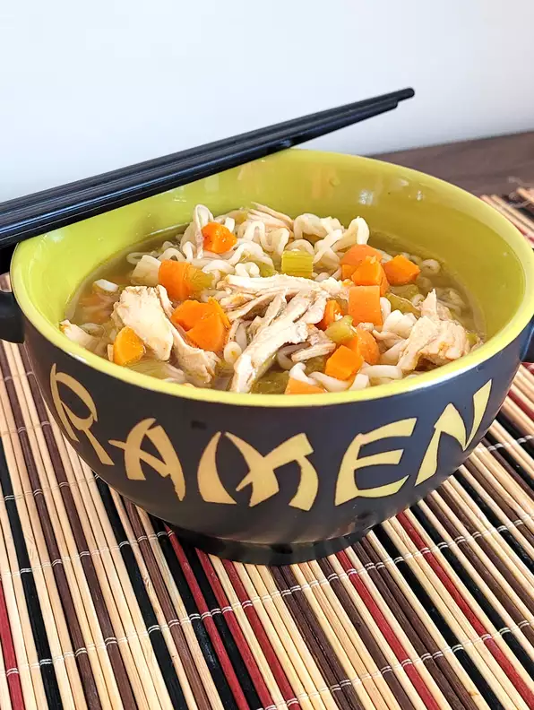

Chicken Ramen Soup

A great way to kick your ramen noodles up a notch.
Ingredients
- 1 tablespoon olive oil, or as needed
- 4 stalks celery, diced
- 4 medium carrots, peeled and chopped
- salt and ground black pepper to taste
- ½ teaspoon ginger paste
-
1 whole cooked rotisserie chicken - skinned, boned, and meat shredded
- 1 tablespoon soy sauce
- 3 (3 ounce) packages ramen noodles (flavor packets discarded)
Steps
-
Heat oil in a soup pot over medium heat. Add celery and carrots and season
with salt and pepper. Cook until softened, about 10 minutes. Add garlic
and ginger paste and cook until fragrant, about 1 minute. Add chicken
stock and bring to a boil.
- Add chicken and soy sauce and simmer for 1 hour.
-
Bring a large pot of water to a boil. Add ramen and cook, stirring
occasionally, until tender yet firm to the bite, 2 to 3 minutes. Drain.
-
To serve, ladle ramen into soup bowls, then ladle chicken soup over top.